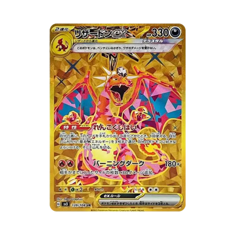

ミュウex UR 208/165
ミュウex UR 208/165
current: ¥14,800 ↓ (SNKRDUNK) — checked 4m ago
Low ¥14,000
 ブラッキーVMAX 245/184
ブラッキーVMAX 245/184
current: ¥19,600 (SNKRDUNK) — checked 3m ago
Low ¥19,000
 レックウザVMAX CSR
レックウザVMAX CSR
current: ¥24,490 ↓ (SNKRDUNK) — checked 3m ago
slight down
Low ¥24,000
 レックウザ 252/184
レックウザ 252/184
current: ¥24,490 ↓ (SNKRDUNK) — checked 2m ago
slight down
Low ¥20,000
 ピカチュウVMAX 223/184
ピカチュウVMAX 223/184
current: ¥27,200 ↓ (Mercari) — checked 1m ago
slight down
Low ¥26,000
 リザードンV SR 103/100
リザードンV SR 103/100
current: ¥48,800 ↓ (SNKRDUNK) — checked just now
Consider at 57k
Low ¥40,000
 イーブイ&カビゴンGX SM-P 297
イーブイ&カビゴンGX SM-P 297
current: ¥70,000 ↓ (SNKRDUNK) — checked 13m ago
Low ¥65,000
 アーマードミュウツー
アーマードミュウツー
current: ¥110,000 (SNKRDUNK) — checked 13m ago
Low pop
Low ¥99,999
 レックウザVMAX HR
レックウザVMAX HR
current: ¥40,000 ↓ (SNKRDUNK) — checked 12m ago
Low ¥38,000
 ブラッキーVMAX HR
ブラッキーVMAX HR
current: ¥16,500 ↓ (SNKRDUNK) — checked 11m ago
Low ¥16,000
 リザードンex 201/165
リザードンex 201/165
current: ¥74,984 ↓ (Mercari) — checked 11m ago
75k is pre-bubble
Low ¥69,000
 ミュウex SAR 205/165
ミュウex SAR 205/165
current: ¥56,500 ↓ (SNKRDUNK) — checked 10m ago
55k is pre-bubble
Low ¥50,000
 ミュウV SR: SA 106/100
ミュウV SR: SA 106/100
current: ¥32,500 ↓ (SNKRDUNK) — checked 9m ago
consider at 30k
8k pop
Low ¥8,000
 ロケット団のミュウツーex SAR
ロケット団のミュウツーex SAR
current: ¥20,500 ↓ (SNKRDUNK) — checked 9m ago
Low ¥19,000
 ミュウVMAX HR 118/100
ミュウVMAX HR 118/100
current: ¥22,650 (Mercari) — checked 8m ago
consider at 20k
1.5k pop
Low ¥22,000
 レックウザV SR 076/067
レックウザV SR 076/067
current: ¥145,000 (Mercari) — checked 7m ago
consider at 100k
Low ¥110,000
 カイリューV SR 074/067
カイリューV SR 074/067
current: ¥100,000 ↓ (Mercari) — checked 7m ago
Low ¥99,000
 名探偵ピカチュウ SV-P 098
名探偵ピカチュウ SV-P 098
current: ¥42,000 ↑ (SNKRDUNK) — checked 6m ago
bought mine at 46k
consider around 35k -- high pop
Low ¥39,000
 ブラッキーv sr sa 085/069
ブラッキーv sr sa 085/069
current: ¥75,000 ↓ (SNKRDUNK) — checked 5m ago
Consider 60k
Low ¥73,000

リザードン ex URcurrent: ¥20,000 ↑ (Mercari) — checked 5m ago
Consider above 25k